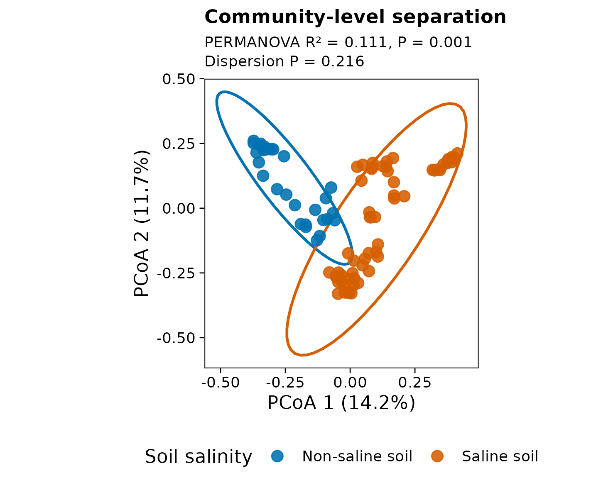
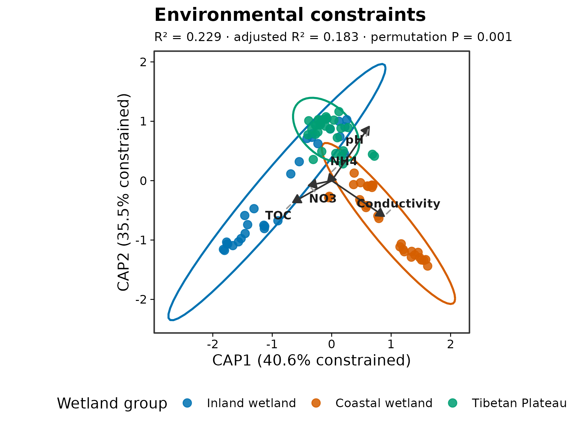
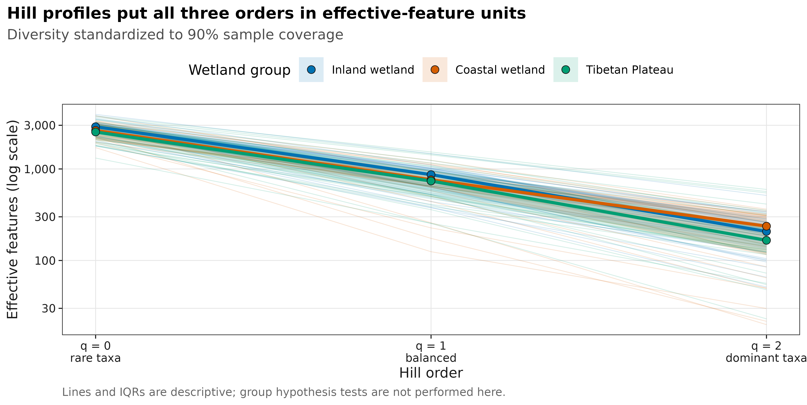
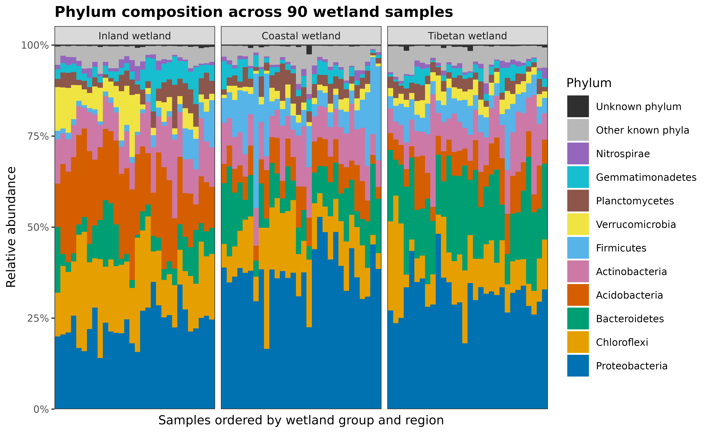
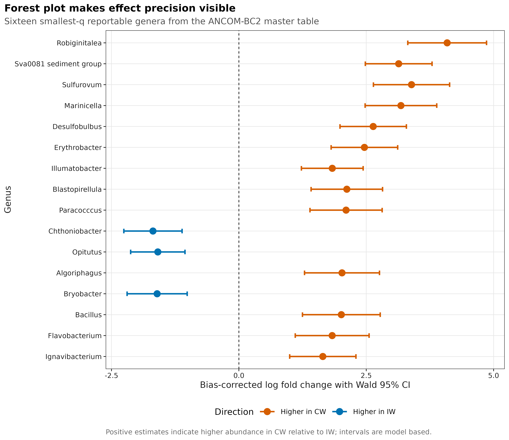
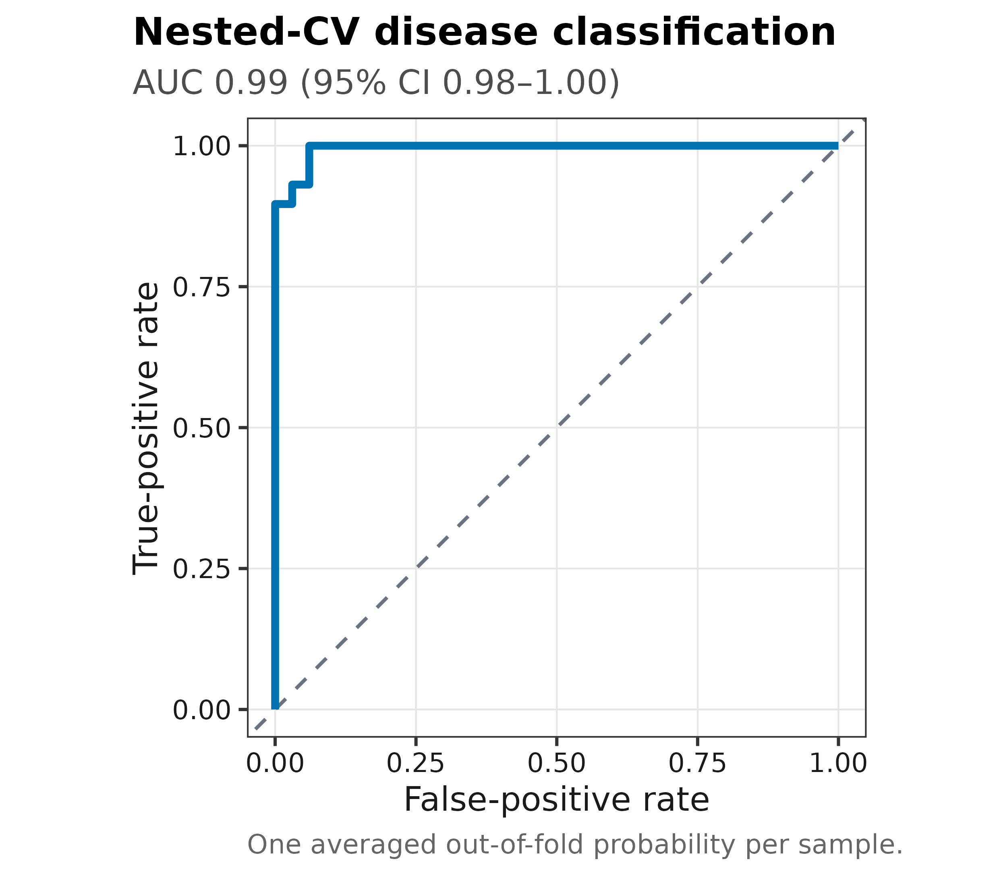
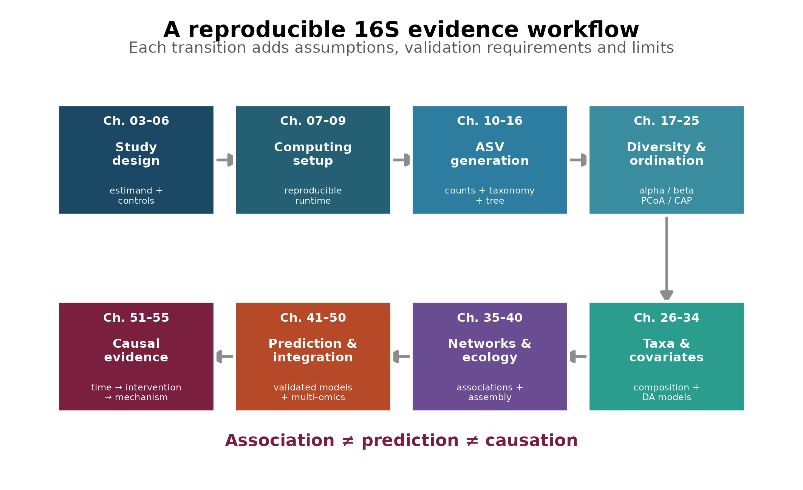

微生物组分析最佳实践 · 16S
从真实数据到发表级重绘图
16S 研究的价值不取决于方法堆得多不多，而取决于每张图是否回答了明确的问题、统计检验是否匹配实验设计，以及结论有没有越过证据边界。
下面先用七张代表性结果图看六类常见问题。它们分别负责描述多样性、比较整体群落、定位差异类群、评估预测能力或校准因果语言；任何一张图都不能替代其他层级的证据。
先认清分析需要的三张表
常规 16S 下游分析从计数表、分类表和样本信息表开始。三张表通过样本 ID 和特征 ID 对齐，而不是按文件中的行号拼接。
| 输入 | 每行和每列代表什么 | 分析前先检查什么 |
|---|---|---|
otutab |
行是 ASV/OTU，列是样本，单元格是 reads 数 | 保留非负整数计数，不要用百分比代替原始计数 |
taxonomy |
行是同一批 ASV/OTU，列是分类层级 | 特征 ID 与计数表一致；未注释的分类保留为未知 |
metadata |
行是样本，列是分组、个体、时间、批次及协变量 | 样本 ID 与计数表一致；技术重复不能当作独立样本 |
可以先查看中国湿地数据的计数表、分类表和样本信息表：计数表包含 13,628 个 OTU、90 个样本，分为 inland、coastal 和 Tibetan wetland 三组，每组 30 个样本。
这三张表足以开始组成和多样性分析，但不能替代其他测量。绝对定量还需要微生物负荷，生存分析需要随访时间和事件，多组学整合需要同一样本的另一组学数据，MR 则使用外部 GWAS 汇总统计。下方预测和因果证据示例使用各自对应的研究数据，不是从湿地样本推导疾病结论。
同一批湿地样本，为什么能回答群落差异，却不能分离盐度效应？
这 90 个样本恰好说明了“有数据”和“问题可回答”的区别：30 个 inland 样本都是 non-saline，coastal 和 Tibetan 各 30 个样本都是 saline。湿地类型与盐度没有形成交叉设计。
| 想回答的问题 | 当前数据能提供的证据 | 还缺少什么 |
|---|---|---|
| 三类湿地的群落组成是否不同？ | 可以描述组间差异；检验还取决于采样点之间是否可交换 | 地点、区组和重复采样信息 |
| 控制湿地类型后，盐度还有多大独立关联？ | 无法分离：同一湿地组内没有盐度对照 | 同一类型内同时覆盖不同盐度，或重新界定比较对象 |
| 群落能否预测湿地标签？ | 可以提出预测任务，但随机分样本可能利用地点特征 | 按独立地点留出的测试数据 |
因此，分析顺序是先确定比较对象，再判断设计是否支持，最后选距离、模型和图形。若第二步已经失败，换一种差异分析或增加协变量不会产生缺失的对照。下面的图集按它们能提供的证据来阅读，而不是把每种图都当作研究必须完成的步骤。
六类结果图分别回答什么问题？
群落整体是否不同？


这两张图来自公开的中国湿地 16S 数据。PCoA 回答“样本间整体组成是否不同”；CAP 回答“预先指定的环境梯度与群落差异关联到什么程度”。即使置换检验显著，也不能据此断言环境因子造成了群落变化。
单个样本内部有多丰富、多均匀？

Alpha diversity 不是一个 Shannon 指数就能概括。(q=0) 强调稀有类群，(q=1) 平衡常见与稀有类群，(q=2) 更强调优势类群；测序深度和样本完整度必须与组间比较一起检查。
群落由哪些类群构成？

组成图适合展示优势类群和样本异质性，但不能凭肉眼判断“富集”。所有比例共享同一个分母；没有 spike-in、流式计数或总菌 qPCR 等外部定量时，柱子变高不能直接写成绝对数量增加。
哪些类群与条件相关？

火山图和 cladogram 适合导航，森林图更适合定量解读。正式结果至少要同时报告 contrast、效应量、不确定性、多重检验和协变量；不能按“显著菌最多”选择方法。
模型能否预测新样本？

训练集准确率不能回答泛化问题。预测章节还会检查 calibration、标签置换、特征稳定性、批次泄漏和外部队列表现；AUC 很高也不代表模型找到了疾病机制。
什么时候可以提高因果措辞？

相关、预测和因果是三个不同目标。纵向设计可以补时间顺序，随机干预可以减少部分混杂，培养、敲除和救援实验可以检验具体机制；没有任何单一设计能自动消除全部偏倚。
从研究设计到因果证据的学习地图

| 章节 | 核心问题 | 主要交付 |
|---|---|---|
| 02 | 16S 能测到什么、不能测到什么？ | 技术边界与组学选择 |
| 03–06 | 比较是否由正确的实验单位、对照和采样设计支持？ | 目标效应、对照、批次与数据格式 |
| 07–09 | 计算环境能否被另一台机器重建？ | 固定的软件、包和数据库版本 |
| 10–16 | FASTQ 怎样变成可信的 ASV、taxonomy 和 tree？ | 可追溯的上游结果与逐阶段损失 |
| 17–25 | 样本内部和样本之间的群落差异是什么？ | alpha/beta diversity、PCoA、PERMANOVA、CAP |
| 26–34 | 哪些类群变化，效应有多大？ | 组成图、差异模型、协变量与绝对定量边界 |
| 35–40 | 网络和群落构建结果是否稳健？ | 关联网络、组装过程、中性模型与距离衰减 |
| 41–50 | 功能、预测和多组学结果能否泛化？ | 功能推断、外部验证和跨模态一致性 |
| 51–55 | 证据允许使用多强的因果措辞？ | 时间顺序、干预、三角验证与机制边界 |
章节顺序代表证据依赖关系，不代表每项研究都必须使用全部方法。网络、机器学习、多组学或因果分析是否加入，应由科学问题、实验设计和独立样本量决定，而不是为了让图更多。
三条贯穿所有结果的判断边界
16S 测到的是标记基因片段
16S rRNA 扩增子测序适合比较细菌和古菌群落组成，但通常不能稳定解析菌株、毒力基因、耐药基因或真实代谢活性。功能预测描述的是基于参考基因组的推断，不能替代宏基因组、转录组、代谢组或培养实验。
Reads 不是微生物绝对数量
每个样本的 reads 总数同时受取样、DNA 提取、PCR、建库和测序影响。常规 16S 表更接近组成比例；涉及绝对负荷时，需要 spike-in、流式细胞计数、总菌 qPCR/ddPCR 或其他外部定量参照。
分析复杂度不等于证据等级
PCoA、差异分析、网络和机器学习可以发现稳定模式，但仍可能受到实验单位、批次、药物、饮食、地理和其他混杂影响。结论强度应由研究设计和验证方式决定，而不是由图形复杂度决定。
- 图上的点究竟代表独立受试者、动物、笼位、地块，还是技术重复？
- 分组是否与批次、中心、时间或其他变量混杂？
- 是否同时报告效应量、不确定性和多重检验，而不只报告 P 值？
- 结论是在描述关联、评估预测，还是主张因果？
参考
- Knight R, Vrbanac A, Taylor BC, et al. Best practices for analysing microbiomes. Nature Reviews Microbiology. 2018;16:410–422. doi:10.1038/s41579-018-0029-9
- Bolyen E, Rideout JR, Dillon MR, et al. Reproducible, interactive, scalable and extensible microbiome data science using QIIME 2. Nature Biotechnology. 2019;37:852–857. doi:10.1038/s41587-019-0209-9
- Gloor GB, Macklaim JM, Pawlowsky-Glahn V, Egozcue JJ. Microbiome datasets are compositional: and this is not optional. Frontiers in Microbiology. 2017;8:2224. doi:10.3389/fmicb.2017.02224
- Nearing JT, Douglas GM, Hayes MG, et al. Microbiome differential abundance methods produce different results across 38 datasets. Nature Communications. 2022;13:342. doi:10.1038/s41467-022-28034-z
- An J, Liu C, Wang Q, et al. Soil bacterial community structure in Chinese wetlands. Geoderma. 2019;337:290–299. doi:10.1016/j.geoderma.2018.09.035
- Liu C, Cui Y, Li X, Yao M. microeco: an R package for data mining in microbial community ecology. FEMS Microbiology Ecology. 2021;97(2):fiaa255. doi:10.1093/femsec/fiaa255